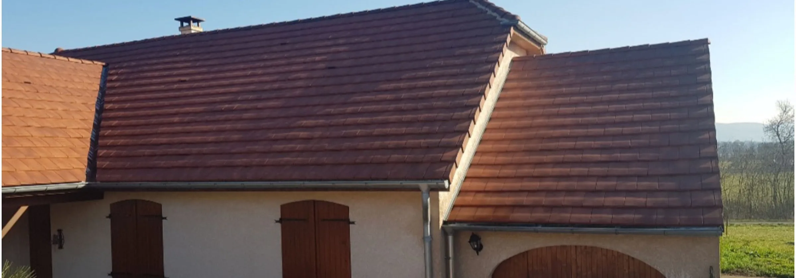
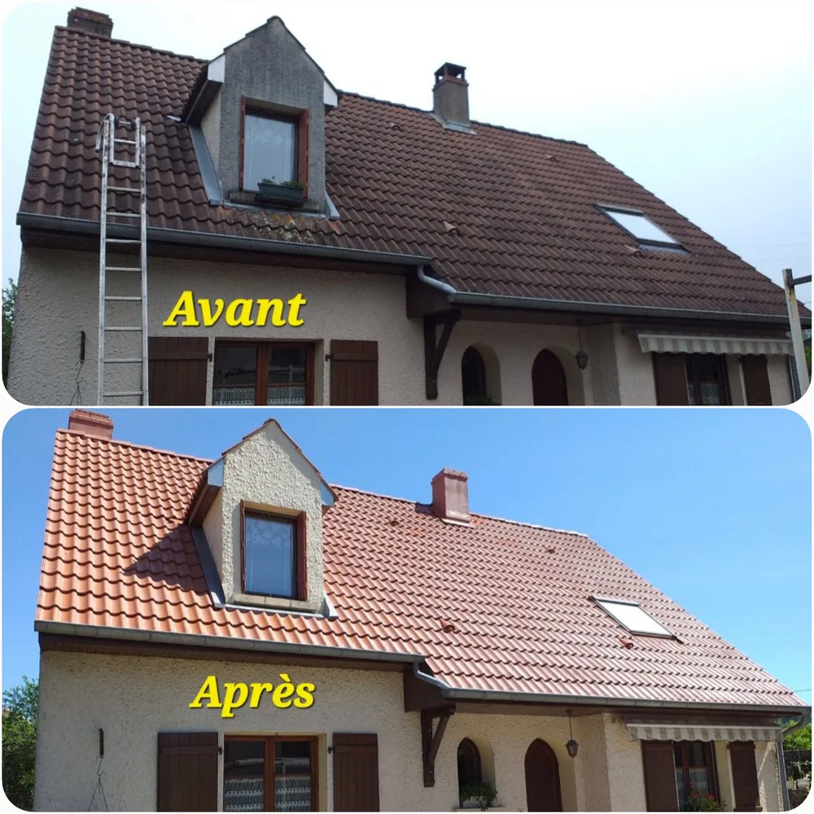
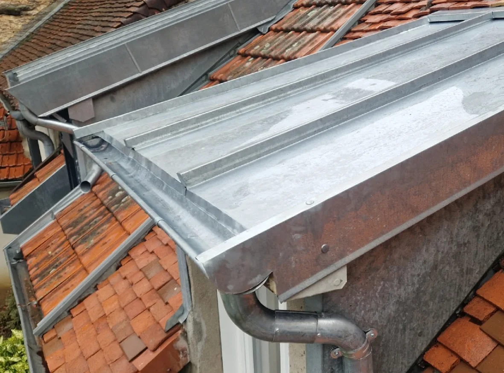
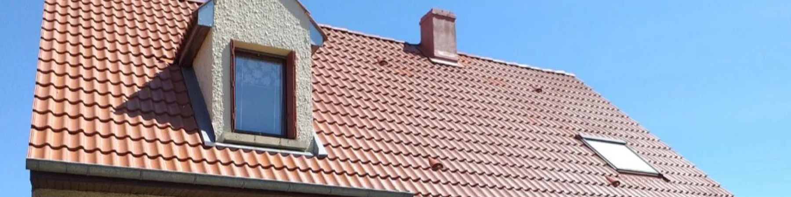
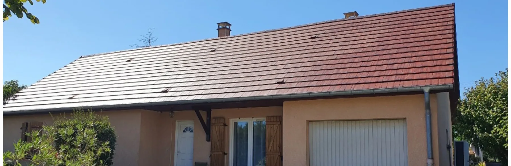

Savoir-faire
Je maîtrise la pose, la réfection, l’isolation et l’étanchéification de tous types de couverture.

Couvreur zingueur à Courlaoux depuis 2009, je m’occupe moi-même de chaque chantier : couverture, étanchéité et zinguerie, en rénovation comme en neuf.

« Excellent professionnel qui respecte ses délais et réalise un travail de qualité. Très bon relationnel avec ses clients. Je vous le recommande. »
« Super travail, artisan très consciencieux et de bon conseil. Très à l’écoute de ses clients et arrangeant. Nous referons appel à lui sans hésiter. »
« Toit complètement nettoyé et certaines tuiles remplacées. Travail minutieux et impeccable. Artisan sympathique, courtois et serviable. Je recommande ! »
« Un très bon artisan qui sait être à l’écoute de ses clients. Très pro et de bon conseil. Je recommande vivement. »
« Personne très réactive, professionnelle, qui prend le temps de bien expliquer. Travail soigné. Nous recommandons M. Gand. »
« Je recommanderai Monsieur Gand sans problème. Artisan sérieux, de confiance et professionnel dans la démarche mais aussi dans le travail. »
Couverture · étanchéité · zinguerie
Garantie décennale · responsabilité civile · devis gratuit
Je maîtrise la pose, la réfection, l’isolation et l’étanchéification de tous types de couverture.

Mes travaux sont couverts par une garantie pendant 10 ans.

Les travaux de toiture sont le cœur de mon activité depuis plus de 10 ans.
Mes prestations
Traitement de toiture, zinguerie, charpente, étanchéité, dessous de toit PVC/bois et isolation.
Que ce soit pour la rénovation d’une ancienne habitation ou pour une construction neuve, je reste disponible et je vous réponds directement.
Traitement de toiture, zinguerie, charpente, étanchéité, dessous de toit PVC/bois et isolation : je réalise moi-même chaque étape des travaux.
Tous les travaux que j’effectue sont couverts par une garantie décennale et une responsabilité civile.
10ans de garantie
Je m’engage à respecter vos attentes et votre budget. Et le devis est gratuit.
J’interviens dans le Jura, la Saône-et-Loire, l’Ain, la Côte-d’Or et le Doubs.

Devis gratuit et détaillé
Me confier votre toiture, c’est la garantie d’un toit étanche pour les années à venir. Décrivez-moi vos travaux : je vous remets un devis gratuit et détaillé.